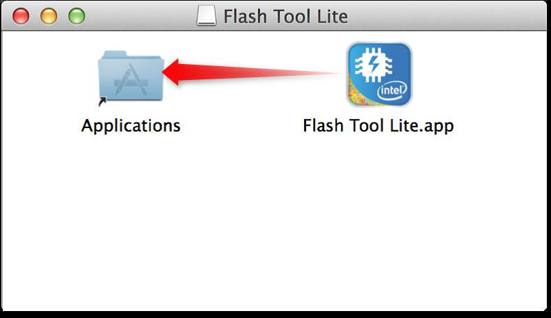

Set up Flash Tool Lite for Mac OSX
This document explains the installation procedure Flash Tool Lite for Mac OSX. The tool is used to flash the firmware on Intel® Edison boards, but will expand to other IoT products in the future.
Installation
-
Get the latest Flash Tool Lite.
- On the USB key: downloads → Mac
- Copy PhoneFlashToolLite_[version]_mac64.dmg to your computer.
-
Open FlashToolLite.dmg and drag Flash Tool Lite into the Application folder.
